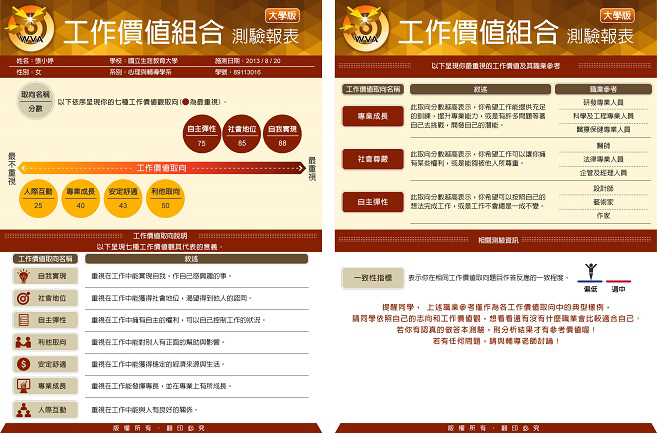
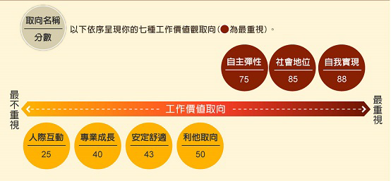
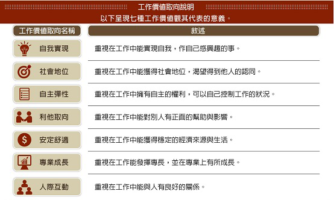
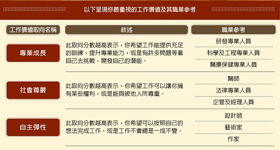

-
- 報表須知
- 報表申請
- 若您所安排之施測班級已完成測驗，請至[學生報表]>[報表申請與下載]頁面進行申請。
- 學生報表於正式施測日之當學期內，必須提出申請，逾期則無法受理。
例如：若於上學期施測，則最後申請日為1月31日；若於下學期施測，則最後申請日為7月31日。 - 申請成功之學生報表，自申請日之後的三個月內（含製表所需之一週作業時間），皆可自行於系統中下載使用，逾期則系統將會自動刪除報表檔案。
例如：民國100年7月31日當天提出申請，同年10月31日之前可於系統中下載學生報表檔案。 - 報表之檔案格式分為PDF版與網頁版，您可依使用方式與解測需求於系統中開放學生端之權限。
● PDF版：可用於個別施測後之個別解測，方便下載與列印。
● 網頁版：可用於團體施測後之統一解測。
- 報表資訊說明
本測驗結果報表依據本土研究結果之理論架構，提供7種工作價值組合取向的得分情形，並繪製相關排序圖及說明各工作價值觀取向所代表的意義，可幫助受試者進行自我探索。 此外報表提供受試者最重視的三個工作價值取向的說明與對應之職業參考，協助受試者為未來生涯方向進行思考及規劃，也可作為輔導教師在進行測驗解釋之參考訊息。 下圖為本測驗結果報表示意圖。
- 測驗分數
依據本土研究結果之理論架構，提供7種工作價值之作答反應經轉換且四捨五入成0～100間的分數。 - 排序圖
根據7種工作價值組合之作答分數繪製排序圖，幫助受試者更清楚了解對各工作價值觀取向的重視程度。
- 工作價值組合取向意義
提供7種工作價值取向的意義，協助受試者對各工作價值有基本認識。
- 重視的工作價值
依據作答分數挑選出受試者最重視的3種工作價值組合取向，並提供說明。 - 職業參考
依依據受試者最重視的三個工作價值取向，分別對應3個對應於美國勞工局職業分類網站O*NET資料庫及我國職業大典中的職業名稱。
- 相關測驗資訊
提供一致性指標協助受試者綜合考量測驗結果之參考性。